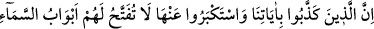
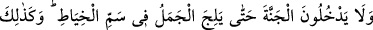
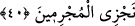

Allah Teâlâ’nın bize lütuf ve keremiyle muamelede bulunmasını niyaz ederiz. Hidayeti
nasip eden de, her türlü hayırlı işte muvaffak kılan da O’dur.
40. Bizim ayetlerimizi yalanlayıp da onlara karşı kibirlenmek isteyenler var ya,
işte onlara gök kapıları açılmayacak ve onlar, deve iğne deliğine girinceye kadar
cennete giremeyeceklerdir! Suçluları işte böyle cezalandırırız!
“Bizim ayetlerimizi” yani tevhid, peygamberlerin nübüvveti, öldükten sonra dirilme
ve yaptıklarının karşılığını görme (ba‘s ve ceza) gibi dinin asıllarını gösteren delilleri
“yalanlayan ve onlara inanmaya tenezzül etmeyenler” büyüklenip bu delillere
inanmayı gururlarına yediremeyen ve gereği gibi amel etmeyen kâfîrler “var ya, işte
onlara gök kapıları açılmayacak” duaları ve amelleri kabul olunmayacak veya ruhları
da göğe yükselmeyecektir. Mü’minlerin ise dua ve amelleri kabul olunur. Ruhları da
semaya çıkar. Nitekim bir hadiste şöyle buyurulmuştur: “Mü’minin ruhu semaya
yükseltilir. Onun için göğün kapısının açılması istenir. Ona: “Merhaba, temiz cesette
bulunan temiz ruh!” denir ve yedinci kat semaya çıkıncaya kadar kapı açılır. Kâfirin
ruhu için de kapının açılması istenir. Ona: “Yerilmiş olarak dön geri.” denilir ve
Siccîn’e yuvarlanır.”[32] Siccîn, yerin yedi kat altında bulunan ve İblislerin iblisinin
oturduğu yerdir.
Saîd ve şakî bütün ruhlar cesedlerine bitişiktir. Ruhlar azap görür, cesetler de bundan
ızdırap duyar. Nitekim güneş gökte olduğu halde ışığı yeryüzündedir.
Mü’minlerden asî olanların ruhları, gök ile yer arasında bulunur. Bazıları havada,
diğer bir kısmı da kabir çukurunda olmak üzere yedi günden bir yıla kadar veya daha
çok bir zaman geçer. Nihayet dirilerin duaları ve yapılan iyiliklerin imdadıyla
temizlenip ğöğe yükselir ve dünya semasında bulunan bir yere ulaşır.
“Ve deve iğne deliğinden geçinceye kadar onlar cennete giremeyeceklerdir.”
Burada kâfirlerin cennete girmelerinin ne kadar zor ve imkânsız olduğunu ifade etmek
üzere cisim bakımından büyüklüğe misal olan devenin, darlık ve küçüklüğe misal olan
iğne deliğinden geçmesi örnek verilmiştir. Bunun olması ise imkansızdır. Aynı şekilde
bu misale dayandırılan onların cennete girmesi de imkansızdır. Çünkü muhale mevkuf
(bağlı) olan her şey muhaldir.
Araplar, bir şeyin olumsuzluğunu te’kit etmek istediklerinde onu, olması imkansız olan
bir şeyle alâkalandırırlar. Nitekim bir şair şöyle der:
Karga beyazlaştığı zaman ailemin yanına gelirim